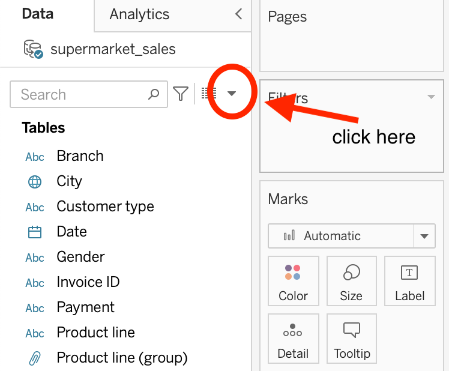

total_sold <- summarize(supermarket_raw,quantity_summed=sum(quantity)) Week 3 Lab: Tableau Fundamentals
This Lab Contributes to Course Objectives 2, 3, 4, 5, 6, and 8
Learning Objectives R
Learning Objectives Tableau
Apply advanced options in the connections page
Identify the function of items on the Tableau Toolbar
Create sorted and stacked bar charts
Understand the functions of the
MarksandFilterscardsCreate calculated fields
Explain what it means to group your data
Apply formatting features to make your visualization more effective
Create a line chart
Manipulate date-time fields
Lab Overview
In week 2 of the course we covered the basic Tableau flow of analysis: Connect -> Analyze -> Share. Each of you followed this flow in problem set 2 to produce a simple data visualization using the grocery store spending dataset.
Today we are going to go in more detail in the analyze step of the process. We will learn to make a few new figures, we will learn more of the features of the Tableau analysis page, and we will discuss a few ways to change the formatting of your visualizations to make them more effective.
Analyze Overview
1. Click on Sheet 1 at the bottom of the Tableau Desktop window.
2. Use the Data Pane to view the data source and explore data fields within a worksheet
3. Use the Columns and Rows Shelves to create a structure for your visualization. You will create a visualization by placing fields on these shelves. You can place any number of fields on these shelves.
4. View your visualization in the View Pane.
5. Change aggregations
6. Use Show Me
Create calculated fields
More advanced bar charts
Use the
MarksandFiltersCardsCreate groups
Showing and hiding the legend
Formatting titles, axes, etc.
Line charts
Manipulating dates
7. Create calculated fields
In your last assignment you were asked to use R to calculate the total value of the sale using the unit_price and quantity columns. (And name the new column subtotal.)
We can do this sort of calculation in Tableau too!

Then select Create Calculated Field...
Give your field a useful name (let’s use subtotal).
Drag the relevant variables into the box. Type the appropriate function (multiply). Click OK. And Voila.
You do it: Validate that the value labeled tax_5_percent is indeed 5% of the subtotal by creating a new variable called tax_verify.
You do it: Explore some other options for data manipulation by clicking the right triangle in the Create Calculated Field box. Try creating a new variable of your choosing.
8. More advanced bar charts
Let’s start off with our bar chart from last class where we looked at customer ratings by product line…
From our lecture on Wednesday, what are some ways we could improve this visualization to answer the question “Which product line has the lowest average customer rating?”
Title, adding color to highlight the top category, making font larger and easier to read, maybe changing axis range
What about sorting?
There are a two ways to sort bars on our chart:
- use the toolbar
- use the icon next to the y-axis label
You do it: Sort the data so that the category with the highest rating is first and the category with the lowest rating is last.
What if we want to use color to highlight the top category?
There are a few ways to do this:
- Drag product line to color on the Marks card (then edit colors) - Right click the bar you want to stand out and click Group (then edit colors)
What if we want to adjust the scale of the y-axis so that differences across the bars are easier to see?
- Right click the y-axis
- Click edit axis
- Choose an appropriate range
Now what happens if we compare these customer ratings across branches? Does the product line with the top ratings vary by store?
You do it: Highlight the product line with the top rating at branch A - how does this rank in the other branches?
R: dplyr continued
Last week we introduced the five dplyr verbs generally used to manipulate data. We covered mutate, filter, select, and arrange. We skipped over summarize. Today we will introduce summarize and a helpful companion function group_by. The summarize function is used to collapse multiple rows of data into a single row, by computing summary statistics for each group. This function can be used to summarize and aggregate data by computing statistics such as mean, sum, count, minimum, maximum, etc. for each group defined in the data.
Let’s return to our dataset supermarket_sales.csv. Use the function read_csv() to read supermarket_sales.csv into a dataframe called supermarket_raw (see lab 2). We can use summarize() to calculate the total number of units sold in the dataset.